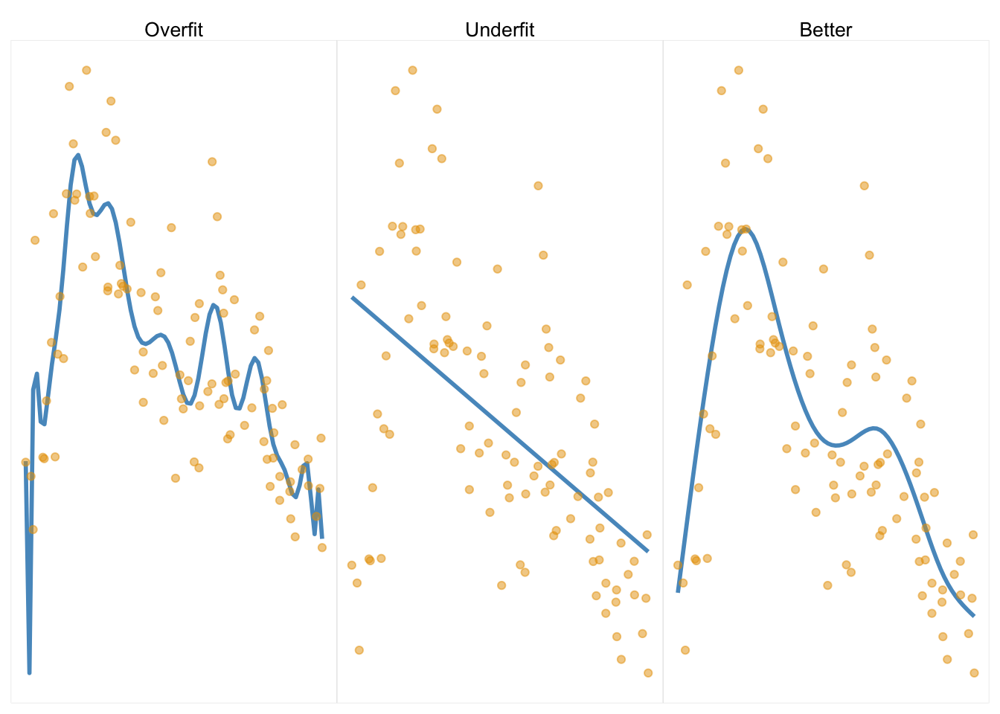
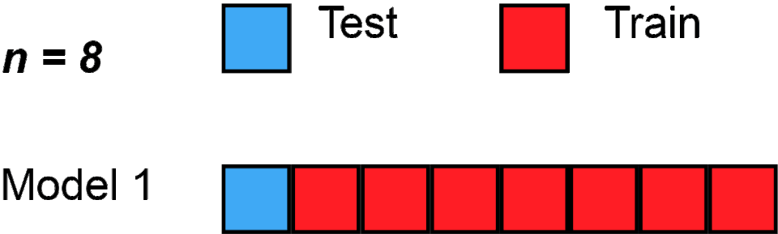

library(lme4)Loading required package: Matrix?sleepstudy
s <- sleepstudy
A classic teaching dataset from lmer. Hooray!
library(lme4)Loading required package: Matrix?sleepstudy
s <- sleepstudyA Question : Is there a relationship between number of days of sleep deprivation and reaction time?
How might we graph this in ggplot?
library(ggplot2)
ggplot(sleepstudy, aes(y = Reaction, x = Days, color = Subject)) +
geom_point(size=2) +
# facet_wrap(~Subject) +
geom_smooth(method = "lm")`geom_smooth()` using formula = 'y ~ x'
library(ggplot2)
ggplot(sleepstudy, aes(y = Reaction, x = Days, color = Subject)) +
geom_point(size=2) +
facet_wrap(~Subject) +
geom_smooth(method = "lm")`geom_smooth()` using formula = 'y ~ x'
What model would we define?
Reaction is the DV
I’m adding Days as a Fixed IV (so I’ll get the average effect of # of days of sleep deprivation on reaction time)
I’m also adding a random intercept : (1 | Subject) that will estimate how much the intercept (the 1 term) of individual raction times (the level 2 variable) varies by Subject (the level 1 grouping variable).
l2 <- lmer(Reaction ~ Days + (1 | Subject), data = sleepstudy)
summary(l2)Linear mixed model fit by REML ['lmerMod']
Formula: Reaction ~ Days + (1 | Subject)
Data: sleepstudy
REML criterion at convergence: 1786.5
Scaled residuals:
Min 1Q Median 3Q Max
-3.2257 -0.5529 0.0109 0.5188 4.2506
Random effects:
Groups Name Variance Std.Dev.
Subject (Intercept) 1378.2 37.12
Residual 960.5 30.99
Number of obs: 180, groups: Subject, 18
Fixed effects:
Estimate Std. Error t value
(Intercept) 251.4051 9.7467 25.79
Days 10.4673 0.8042 13.02
Correlation of Fixed Effects:
(Intr)
Days -0.371How do we interpret the results of this model?
Fixed Effects : these deal with the “average” effects - ignoring all those important individual differences (which are accounted for in the random effects.)
Intercept = 251.41 = the average person’s reaction time at 0 days of sleep deprivation is 251.4 milliseconds.
Days = 10.47 = for every day of sleep deprivation, the average person’s reaction time increases by 10.47 MS; the standard error is an estimate of how much variation we’d expect in this average slope due
Random Effects : these describe those individual differences in people’s starting responses to the DV (random intercepts) and individual differences in the relationship between the IV and the DV (random slopes).
Subject (Intercept) = 37.12
Residual = 30.99
What model would we define?
l3 <- lmer(Reaction ~ Days + (Days | Subject), data = sleepstudy)
summary(l3)Linear mixed model fit by REML ['lmerMod']
Formula: Reaction ~ Days + (Days | Subject)
Data: sleepstudy
REML criterion at convergence: 1743.6
Scaled residuals:
Min 1Q Median 3Q Max
-3.9536 -0.4634 0.0231 0.4634 5.1793
Random effects:
Groups Name Variance Std.Dev. Corr
Subject (Intercept) 612.10 24.741
Days 35.07 5.922 0.07
Residual 654.94 25.592
Number of obs: 180, groups: Subject, 18
Fixed effects:
Estimate Std. Error t value
(Intercept) 251.405 6.825 36.838
Days 10.467 1.546 6.771
Correlation of Fixed Effects:
(Intr)
Days -0.138How do we interpret the results of this model?
Fixed Effects :
Intercept :
Slope (Days)
Random Effects :
Intercept :
Slope :
Correlation of Fixed Effects : How are higher levels of one fixed (averaged) coefficient related to the others?
ICE BREAKER : what’s your favorite place in the bay area to see nature?
THE STUDY : participants were shocked while looking at either virtual nature, urban, or indoor images (while getting their brains scanned).
THE TABLE :
What is going on with this models?
What seems important?
What seems irrelevant?
What questions do you have?
| Abstract [full article] | Linear Model Table [link to SI materials] |
|---|---|
 |
Find a Buddy.
Walk them through your study (Milestone 3)
What is your question (and why should we care)?
How did you measure / manipulate these variables?
Walk them through your graph / results!
Some volunteers to share with the class? Low-stakes practice for more stressful situations where you will be more prepared :)
When your model is too complex, each variable in the model (parameter) increases the model complexity.
library(ggplot2)
# Fakin' some data.
set.seed(42)
n <- 100
x <- seq(-5, 5, length.out = n)
y <- sin(x) + rnorm(n, sd = 2)
d <- data.frame(x, y)
# Graphin the fake data.
ggplot(d, aes(x, y)) +
geom_point(size = 2) +
stat_smooth(method = "lm", formula = y ~ poly(x, 25), se = FALSE, color = "red", size = 2) +
labs(title = "Overfit Model (25-Degree Polynomial IV") +
theme_minimal()Warning: Using `size` aesthetic for lines was deprecated in ggplot2 3.4.0.
ℹ Please use `linewidth` instead.KEY IDEA : complex models that perfectly fit the data are problematic
We don’t expect over-fit models to generalize to other samples. [Image source]

Cross Validation. To ensure your model generalizes to other samples, you can a) replicate, or b) cross-validate your data. Cross validation involves dividing your sample into sub-samples; define a model on one sample, then test the model in the other(s).

h <- read.csv("~/Dropbox/!GRADSTATS/Datasets/World Happiness Report - 2024/World-happiness-report-2024.csv", stringsAsFactors = T)
library(ggplot2)
library(jtools)
## Some data cleaning.
h$GDPcat <- ifelse(scale(h$Log.GDP.per.capita) > sd(h$Log.GDP.per.capita, na.rm = T), "High GDP", "Low GDP")
h$GDPcat <- as.factor(h$GDPcat)
# plot(h$GDPcat) # making sure this re-leveling worked.
ggplot(data = subset(h, !is.na(h$GDPcat)), aes(x = scale(Ladder.score), y = scale(Social.support), color = GDPcat)) +
geom_point(alpha = .5, position = "jitter") +
geom_smooth(method = "lm") + labs(title = "Graph of an Interaction Effect from Lecture 10") + ylab("Social Support") + xlab("Happiness (Ladder Score)") +
theme_apa()`geom_smooth()` using formula = 'y ~ x'
Table : Linear Models for the Interaction Effect from Lecture 10
mod1 <- lm(scale(Social.support) ~ scale(Log.GDP.per.capita), data = h)
mod2 <- lm(scale(Social.support) ~ scale(Ladder.score), data = h)
mod3 <- lm(scale(Social.support) ~ scale(Log.GDP.per.capita) + scale(Ladder.score), data = h)
mod4 <- lm(scale(Social.support) ~ scale(Ladder.score) * scale(Log.GDP.per.capita), data = h)
export_summs(mod1, mod2, mod3, mod4)| Model 1 | Model 2 | Model 3 | Model 4 | |
|---|---|---|---|---|
| (Intercept) | 0.00 | -0.00 | -0.00 | 0.08 |
| (0.06) | (0.05) | (0.05) | (0.06) | |
| scale(Log.GDP.per.capita) | 0.73 *** | 0.25 ** | 0.25 ** | |
| (0.06) | (0.07) | (0.07) | ||
| scale(Ladder.score) | 0.81 *** | 0.62 *** | 0.60 *** | |
| (0.05) | (0.07) | (0.07) | ||
| scale(Ladder.score):scale(Log.GDP.per.capita) | -0.10 * | |||
| (0.05) | ||||
| N | 140 | 140 | 140 | 140 |
| R2 | 0.53 | 0.66 | 0.69 | 0.70 |
| *** p < 0.001; ** p < 0.01; * p < 0.05. | ||||
Here’s the most simple example of cross-validation (“train-test split”; “holdout cross validation”)
sample(0:1, nrow(h), replace = T, prob = c(.7, .3)) # using the sample function [1] 1 0 0 0 1 0 0 0 0 0 0 0 0 1 0 0 0 1 0 0 0 1 0 1 0 0 0 0 0 0 0 0 1 1 0 1 0
[38] 0 0 0 0 0 0 0 0 0 0 1 0 0 0 0 0 1 0 0 0 0 1 0 0 1 0 0 1 0 1 1 0 1 0 0 1 0
[75] 0 0 0 0 0 0 0 1 0 0 0 0 0 0 1 1 0 0 0 0 1 0 0 0 0 0 0 0 1 1 0 0 0 0 0 1 0
[112] 0 0 1 0 0 1 1 0 0 0 0 0 1 0 1 1 1 1 0 0 0 0 0 0 0 1 0 0 0 1 0 0set.seed(424242)
random.selection <- sample(0:1, nrow(h), replace = T, prob = c(.7, .3))
htrain <- h[random.selection == 0,]
htest <- h[random.selection == 1,]
## Model in training Data
train.mod <- lm(Social.support ~ Ladder.score * Log.GDP.per.capita, data = htrain)
summary(train.mod)
Call:
lm(formula = Social.support ~ Ladder.score * Log.GDP.per.capita,
data = htrain)
Residuals:
Min 1Q Median 3Q Max
-0.70478 -0.08978 -0.00238 0.09815 0.68575
Coefficients:
Estimate Std. Error t value Pr(>|t|)
(Intercept) -0.53619 0.32701 -1.640 0.105
Ladder.score 0.27113 0.06472 4.189 7.39e-05 ***
Log.GDP.per.capita 0.45651 0.27441 1.664 0.100
Ladder.score:Log.GDP.per.capita -0.05874 0.04648 -1.264 0.210
---
Signif. codes: 0 '***' 0.001 '**' 0.01 '*' 0.05 '.' 0.1 ' ' 1
Residual standard error: 0.2043 on 77 degrees of freedom
(2 observations deleted due to missingness)
Multiple R-squared: 0.6821, Adjusted R-squared: 0.6697
F-statistic: 55.07 on 3 and 77 DF, p-value: < 2.2e-16predict(train.mod) # the predicted values of the DV, based on our model. 1 2 4 6 7 8 9 10
1.5658691 1.5408531 1.5020893 1.4986799 1.4973743 1.4764175 1.4602632 1.4549315
12 13 17 18 19 20 21 22
1.4243403 1.4373031 1.4344788 1.4128527 1.4112355 1.4030480 1.3998894 1.4102398
24 29 31 34 35 37 38 39
1.4011533 1.3396428 1.3641704 1.3482150 1.3461128 1.3248942 1.3221398 1.3289260
41 42 44 46 51 53 54 55
1.3314375 1.2782423 1.2902556 1.3075235 1.2863680 1.2282990 1.2373548 1.2754498
58 60 61 63 65 67 68 70
1.2405613 1.2413826 1.1974643 1.2585895 1.2202362 1.1927948 1.2029163 1.2210060
74 75 79 84 85 86 87 89
1.1740772 1.1404057 0.9840313 1.1276332 1.1053595 1.1804468 1.1102798 1.0129970
91 93 94 97 98 99 101 102
1.0924736 1.0104227 1.0439202 0.9598416 1.0922332 0.9636387 1.0327200 0.9640955
104 105 108 110 111 112 114 116
0.9457778 1.0148509 0.9220134 0.8400436 0.8920740 0.8246022 0.8768503 0.8327770
117 119 120 121 122 123 127 128
0.8033361 0.8444944 0.8469843 0.7486051 0.7665298 0.7408530 0.8474353 0.8303265
129 130 132 133 134 140 141 142
0.7734868 0.6925578 0.6519904 0.5952518 0.6387592 0.5175113 0.5352949 0.6073950
143
0.1536218 ## Applying the model to our testing dataset.
predict(train.mod, newdata = htest) # produces predicted values from our training model, using the testing data. 3 5 11 14 15 16 23 25
1.5312384 1.4997124 1.4484716 1.4318518 1.4287474 1.4292117 1.4062990 1.3720706
26 27 28 30 32 33 36 40
1.3650023 1.3798016 1.3789961 1.3876634 1.3514627 1.3144987 1.3447837 1.3373362
43 45 47 48 49 50 52 56
1.2634123 1.3119962 1.2556643 1.2868124 1.2923920 1.2884980 1.2889539 1.2726265
57 59 64 66 69 71 72 73
1.2316819 1.2574693 1.2544183 1.2250269 1.2161932 1.1997594 1.2238602 1.1740769
76 77 78 80 81 82 83 90
1.2016273 1.1730867 1.1831393 1.1495913 1.1658541 1.1392808 1.1255433 0.9620724
92 95 96 100 103 106 107 109
1.0555989 1.0678431 1.0118759 1.0386631 NA 0.9924835 0.9759377 0.8072950
113 115 118 124 125 126 131 135
0.7929260 0.9196825 0.8406228 0.7647379 0.8645359 0.8175708 0.6811526 0.7280377
136 137 138 139
0.5490131 0.7535235 0.5643139 0.4975936 predval.test <- predict(train.mod, newdata = htest) # saves these predicted values from the testing dataset.
## Calculating R^2
test.mod.resid <- htest$Social.support - predval.test
SSE <- sum(test.mod.resid^2, na.rm = T)
SSE[1] 1.541793test.resid <- htest$Social.support - mean(htest$Social.support, na.rm = T)
SST <- sum(test.resid^2, na.rm = T)
(SST - SSE)/SST[1] 0.7040524You’ll often see a few different methods of evaluating model fit.
And there are different methods of defining the test and training datasets. And different packages and tutorials to do this. Here’s one, called “Leave one out cross validation - LOOCV”; gif below via Wikipedia.

# install.packages("caret")
library(caret)Loading required package: latticetrain.control <- trainControl(method = "LOOCV")
loocvmod <- train(Social.support ~ Ladder.score * Log.GDP.per.capita, data = h, method = "lm",
trControl = train.control, na.action = "na.omit")
print(loocvmod)Linear Regression
143 samples
2 predictor
No pre-processing
Resampling: Leave-One-Out Cross-Validation
Summary of sample sizes: 139, 139, 139, 139, 139, 139, ...
Resampling results:
RMSE Rsquared MAE
0.1902603 0.6720989 0.1361974
Tuning parameter 'intercept' was held constant at a value of TRUEIf your independent variables are highly related, then your multivariate regression slope estimates are not uniquely determined. weird things happen to your coefficients, and this makes it hard to interpret your effects.
IN R : check the “variance inflation factor” (VIF); a measure of how much one IV is related to all the other IVs in the model. “Tradition” is that if VIF is > 5 (or I’ve also seen VIF > 10) there’s a problem in the regression.
\(\huge VIF_j=\frac{1}{1-R_{j}^{2}}\)
library(car)Loading required package: carDatavif(mod4) # doesn't seem like multicollinearity is a problem.there are higher-order terms (interactions) in this model
consider setting type = 'predictor'; see ?vif scale(Ladder.score)
2.490104
scale(Log.GDP.per.capita)
2.443312
scale(Ladder.score):scale(Log.GDP.per.capita)
1.057269 ## creating a highly correlated second IV for the sake of this example.
jitter(h$Healthy.life.expectancy, 300) [1] 0.63649887 0.68930612 0.71828952 0.66823278 0.78147940 0.64639281
[7] 0.66783200 0.65547462 0.71468602 0.72225337 0.71773673 0.64999642
[13] 0.62952106 0.64185465 0.72092831 0.69836634 0.64067483 0.60323449
[19] 0.61564585 0.70589567 0.74527554 0.54082440 0.57966955 0.74032124
[25] 0.52293196 0.54462176 0.75101008 0.55563685 0.60367356 0.74810486
[31] 0.69789473 0.54448689 0.56294229 0.69718620 0.62746987 0.69055692
[37] 0.62267421 0.70380172 0.62007029 0.68723153 0.74690172 0.49826800
[43] 0.58734907 0.50056514 0.69238462 0.52731539 0.57692015 0.64389105
[49] 0.57280871 0.69425428 0.82612563 0.77274534 0.38400182 0.57725457
[55] 0.70352020 0.61930331 0.55762718 0.57337490 0.53553203 0.65959492
[61] 0.45026458 NA 0.66845212 0.69307250 0.59281784 0.52861070
[67] 0.54621673 0.69875356 0.45710762 0.43500797 0.56482900 0.54559839
[73] 0.50964668 0.60188374 0.54674710 0.60113762 0.41675213 0.67774238
[79] 0.45482879 0.51207586 0.53754193 0.65166685 0.26579890 0.58060330
[85] 0.53234986 0.85807969 0.66611649 NA 0.25647428 0.12829974
[91] 0.51774245 0.49561179 0.47517286 0.47895859 0.35411168 0.25447142
[97] 0.21655523 0.58171885 0.35686944 0.51373138 0.48182973 0.20760587
[103] NA 0.31835400 0.46658725 0.34832926 0.52310604 0.28958395
[109] 0.33832352 0.33133514 0.42088085 0.27791840 0.16285129 0.31895572
[115] 0.62433954 0.30866350 0.37751970 0.43665557 0.41469131 0.38656597
[121] 0.32196352 0.25386893 0.35348747 0.26579842 0.62022055 0.43845057
[127] 0.49687114 0.62927456 0.48772773 0.38520825 0.37719937 0.40156511
[133] 0.33585422 0.29027768 0.12197319 0.39450247 0.18769012 0.21595348
[139] 0.24276263 0.24909294 -0.03799866 0.57172747 0.27471988h$health2 <- jitter(h$Healthy.life.expectancy, 300)
plot(h$health2, h$Healthy.life.expectancy) # yup.
multimod <- lm(Ladder.score ~ Healthy.life.expectancy + health2, data = h) # both in the model.
summary(multimod) # results! Things look good....
Call:
lm(formula = Ladder.score ~ Healthy.life.expectancy + health2,
data = h)
Residuals:
Min 1Q Median 3Q Max
-3.0155 -0.4313 0.1701 0.5191 1.5809
Coefficients:
Estimate Std. Error t value Pr(>|t|)
(Intercept) 2.6514 0.2202 12.041 < 2e-16 ***
Healthy.life.expectancy 7.5885 1.9725 3.847 0.000182 ***
health2 -2.0676 1.8604 -1.111 0.268360
---
Signif. codes: 0 '***' 0.001 '**' 0.01 '*' 0.05 '.' 0.1 ' ' 1
Residual standard error: 0.7703 on 137 degrees of freedom
(3 observations deleted due to missingness)
Multiple R-squared: 0.5809, Adjusted R-squared: 0.5747
F-statistic: 94.93 on 2 and 137 DF, p-value: < 2.2e-16vif(multimod) # ...but wait!Healthy.life.expectancy health2
24.78939 24.78939 
ACTIVITY :
Find a “Hard Science” effect from Table 1. Does the size of this correlation surprise you? Why / why not?
Find a “Psych Science” effect from Table 2. Does the size of this correlation surprise you? Why / why not?


Farewell! Feel free to stay in touch :) it has been a pleasure and privilege to work with y’all this semester <3